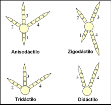

Vertebrados
¿Qué son las Aves?
Las aves son animales vertebrados, de sangre caliente, caracterizados principalmente por tener plumas, pico sin dientes, huesos ligeros y capacidad de volar (aunque no todas lo hacen). Pertenecen a la clase Aves dentro del filo Chordata. Son el único grupo de dinosaurios que sobrevivió a la extinción masiva hace unos 66 millones de años.
Las aves habitan en todos los ecosistemas terrestres, en los acuáticos continentales, y algunas están adaptadas a alimentarse en la superficie marina. Su tamaño puede ser desde 6,4 cm en el colibrí zunzuncito hasta 2,74 metros en el avestruz. Los comportamientos son diversos y notables, como en la anidación, los cuidados parentales, las migraciones, el apareamiento y la tendencia a la asociación en grupos. La comunicación entre las aves es variable y puede implicar señales visuales, llamadas y cantos. Algunas emiten gran diversidad de sonidos.
Origen
Evolución
Las aves se originaron a partir de dinosaurios terópodos a finales del Jurásico, hace más de 165-150 millones de años atrás y son los únicos dinosaurios que sobrevivieron a la extinción masiva del final del Mesozoico. La sangre caliente, que es la característica más notable que comparten con los mamíferos, es resultado de evolución convergente, pues no existió un ancestro común a ambos grupos que tuviera este rasgo. Su evolución dio lugar, tras una fuerte radiación, a las más de 11.000 especies actuales (y más de 150 extintas en tiempos históricos). Las aves son los tetrápodos más diversos; sin embargo, tienen una gran homogeneidad morfológica en comparación con los mamíferos. Las relaciones de parentesco de las familias de aves no siempre pueden definirse por morfología, pero con el análisis de ADN han empezado a esclarecerse.
Las aves, al ser dinosaurios terópodos emplumados, constituyen los únicos dinosaurios vivos conocidos. Asimismo, las aves se consideran reptiles en el sentido cladístico moderno del término, y sus parientes vivos más cercanos son los cocodrilos. Las aves son descendientes de los avianos primitivos (cuyos miembros incluyen a Archaeopteryx) que aparecieron por primera vez durante el Jurásico Superior. Según algunas estimaciones, las aves modernas (Neornithes) evolucionaron en el Cretácico Superior o entre el Cretácico Inferior y Superior (hace 100 millones de años) y se diversificaron drásticamente alrededor de la época del evento de extinción masiva del Cretácico-Paleógeno hace 66 millones de años, que acabó con los pterosaurios y todos los dinosaurios no avianos.
Características de las Aves
Cuerpo cubierto de plumas:
Son únicas en las aves y cumplen funciones de vuelo, aislamiento térmico y comunicación.
Pico sin dientes:
Adaptado a su tipo de alimentación (semillas, carne, néctar, insectos, etc.).
Huesos livianos y huecos (neumáticos):
Reducen el peso del cuerpo para facilitar el vuelo.
Alas:
Extremidades anteriores transformadas que les permiten volar (aunque no todas las aves vuelan, como el pingüino o el avestruz).
Metabolismo elevado y sangre caliente:
Mantienen constante su temperatura corporal (endotermia).
Sistema respiratorio eficiente:
Con pulmones y sacos aéreos que mejoran la oxigenación durante el vuelo.
Reproducción ovípara:
Ponen huevos con cáscara dura, generalmente en nidos, y cuidan a sus crías.
Corazón de cuatro cavidades:
Que separa completamente la sangre oxigenada de la no oxigenada.Diversidad de los ancestros de las aves
Diversificación de las aves modernas
El primer linaje grande y diverso de avianos de cola corta que evolucionó fueron los Enantiornithes, o "aves opuestas", llamados así porque la construcción de sus huesos del hombro era inversa a la de las aves modernas. Los Enantiornithes ocupaban una amplia gama de nichos ecológicos, desde aves playeras que exploraban la arena y comedores de peces hasta formas que habitaban en los árboles y comedores de semillas. Si bien fueron el grupo dominante de avianos durante el período Cretácico, los Enantiornithes se extinguieron junto con muchos otros grupos de dinosaurios al final de la era Mesozoica.
La mayoría de los estudios coinciden en el Cretácico para el ancestro común más reciente de las aves modernas, pero las estimaciones varían desde el Cretácico Inferior hasta el Cretácico Superior. De manera similar, no hay acuerdo sobre si la mayor parte de la diversificación temprana de las aves modernas ocurrió en el Cretácico y se asoció con la ruptura del supercontinente Gondwana o se dio más tarde y potencialmente como consecuencia del evento de extinción del Cretácico-Paleógeno. Este desacuerdo se debe en parte a una divergencia en la evidencia, ya que la mayoría de los estudios de datación molecular sugieren una radiación evolutiva en el Cretácico, mientras que la evidencia fósil apunta a una radiaciónen el Cenozoico (la llamada controversia "rocas" versus "relojes").
Clasificación de las aves modernas
Neornithes
Neognathae
Las aves modernas (Neornithes) son un clado que incluye todas las aves actuales, las cuales están representadas por más de diez mil especies.[1] Las aves modernas presentan notables características que las diferencian del resto de vertebrados, siendo tal vez la más notoria que su piel está en su mayoría cubierta de plumas, y que las extremidades anteriores están transformadas en alas. Otras características que distinguen a las aves son la presencia de un pico sin dientes, un corazón con cuatro cámaras, un metabolismo alto y huesos huecos (lo cual favorece el vuelo).
Los neognatos (Neognathae; del griego ‘mandíbulas nuevas’) son uno de los dos superórdenes de aves dentro de la subclase Neornithes. Neognathae contiene prácticamente todas las aves vivas, a excepción de las pertenecientes a su taxón hermano (el otro superorden viviente, Palaeognathae), que contiene los tinamúes y las no voladoras Ratites (avestruces, emúes, etc.).
Los neognatos tienen fusionados los huesos metacarpianos, tienen un tercer dedo, alargado, y 13 o menos vértebras. Se diferencian de las aves del superorden Palaeognathae en características como la estructura de las mandíbulas. “Neognathae” significa ‘nuevas mandíbulas’, pero, irónicamente, parece que las supuestas “más antiguas” mandíbulas de los paleognatos son de los pocos caracteres apomórficos (más derivados) de este grupo, en comparación con los neognatos.
Galloanserae
Galloanserae es un clado de aves neognatas compuesto por los grupos Galliformes y Anseriformes, los cuales presentan una distribución cosmopolita. Debido a las similitudes anatómicas y moleculares se estableció que estos dos clados están emparentados evolutivamente y se incluyeron juntos en Galloanserae que fue inicialmente denominado Galloanseri. Este clado es apoyado además por otros estudios morfológicos y de datos de secuencia de ADN así como por datos de presencia/ausencia de retrotransposones. Los miembros de Galloanserae son las aves más importantes en la alimentación humana como aves domésticas, y también como aves de caza. Gallinas, pavos, pintadas, faisanes, perdices, codornices, patos, gansos y otras aves similares pertenecen a este grupo.Anatomía y fisiología
Sistema esquelético
Sistema excretor

Sistema respiratorio
Sistema circulatorio
Las aves tienen uno de los aparatos respiratorios más complejos del reino animal. Tras la inhalación, el 75 % del aire fresco pasa de largo de los pulmones y fluye directo a los sacos aéreos posteriores, que se extienden desde los pulmones y conectan con los espacios en los huesos, y los llenan con aire. El otro 25 % del aire va directamente a los pulmones. Cuando el ave exhala, el aire usado fluye fuera de los pulmones y el aire almacenado de los sacos aéreos posteriores es simultáneamente forzado a entrar en los pulmones. De este modo los pulmones de un ave reciben un suministro constante de aire fresco tanto en la inhalación como en la exhalación. La producción de sonidos se logra usando la siringe, una cámara muscular con varias membranas timpánicas que está situada en el extremo inferior de la tráquea, desde la cual se separa.

El corazón de las aves tiene cuatro cámaras separadas (dos aurículas y dos ventrículos) y es el arco aórtico derecho el que da lugar a la circulación sistémica (al contrario que en los mamíferos, en los que el involucrado es el arco aórtico izquierdo). La vena cava inferior (única) recibe sangre de las patas por vía del sistema porta renal (muy reducido). La mayor parte de esta sangre proveniente de la cintura pélvica y la cola, llega al corazón sin pasar por los capilares renales. Los glóbulos rojos tienen núcleo, a diferencia de los mamíferos, y son ovales y biconvexos.